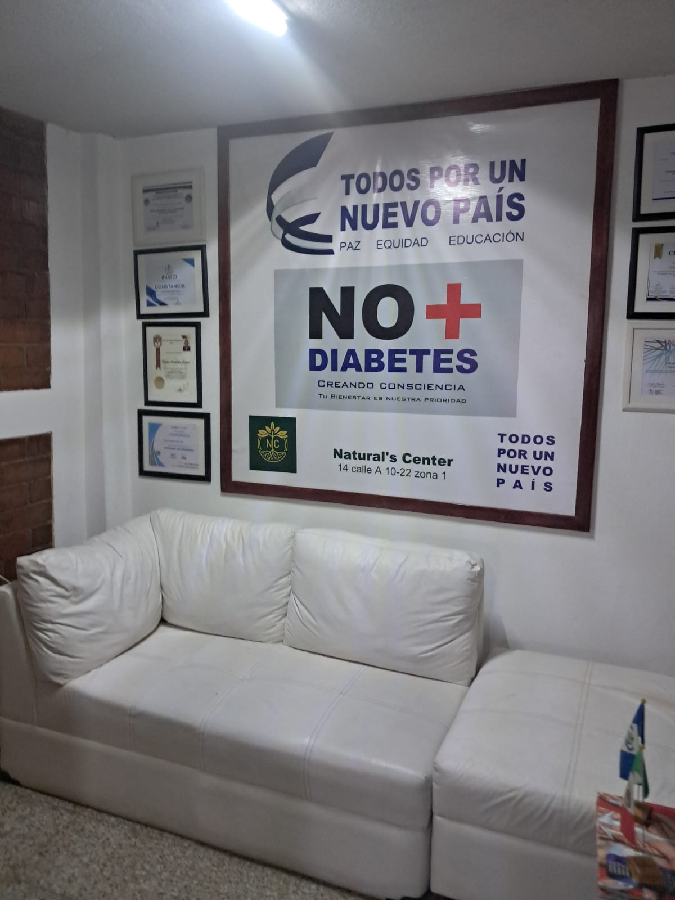

Dr. Nelson Castro
Medicina Funcional, Integrativa, Regenerativa y Educación para la Salud.
Nuestra Filosofía
En Natural's Center entendemos que la salud integral va más allá de la ausencia de síntomas. Bajo la dirección del Dr. Nelson Castro, aplicamos un enfoque humano y científico centrado en el bienestar profundo del paciente.
Creemos firmemente que la Educación para la Salud es la clave para que cada persona pueda comprender su cuerpo, prevenir enfermedades y mantener una óptima calidad de vida a largo plazo.

Pilares de Atención Médica
Funcional
La investigación de la causa de la enfermedad para tratar el origen y no solo los síntomas.
Integrativa
Combinación de tratamientos orientada a potenciar los resultados de recuperación.
Regenerativa
Terapias enfocadas en reparar los tejidos u órganos dañados del organismo.